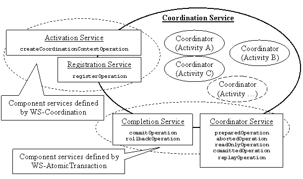
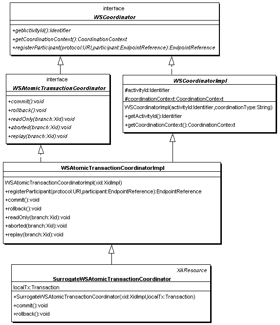
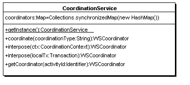

A coordination service coordinates activities. Under the model depicted in figure 1, each activity is coordinated by its own coordinator. Henceforth the term coordinator will be used to refer to the individual runtime components that coordinate activities. The term coordination service will be used to refer to the aggregate of all component services such as the activation, registration etc.
When a request is received at one of the endpoints, unless the request is for creating a new activity, in which case a new coordinator is created, it is simply passed on to the coordinator responsible for the activity concerned. The respective coordinator then handles the requested operation. As new activities are created and existing activities are terminated, coordinators also get created and destroyed. Thus at any given time, the number of active coordinators resident in the coordination service is equal to the number of activities coordinated by service.
The coordination service maintains a central repository of all active coordinators. When a new request arrives at any of the endpoints, the activity identifier is used to lookup the coordinator coordinating the particular activity to dispatch the request. To facilitate this process, the coordination service uses activity identifier as a reference property [33] at all of its endpoints. Individual endpoints however may use additional reference properties depending on what is been handled and how.
The activation and registration endpoints are defined by WS-Coordination specification. All other endpoints are defined by coordination type specific specification such WS- AtomicTransaction , WS- BusinessActivity etc. The activation endpoint allows new activities to be created. The registration endpoint allows participants to register for any activity (regardless of its type) coordinated by the service. The purpose of all other endpoints is to facilitate communication between participants and the coordination service based on specific coordination protocols. Hence are known as protocol services. The set of protocol services offered by the coordination service thus depends on the type of activities coordinated by the service. Presently, the implementation can only coordinate atomic transactions. Hence only protocol services supported by the service (completion and coordinator protocol services) are, those defined by WS- AtomicTransaction specification.
When a new activity is created, the coordination service first determines its type: e.g. an atomic transaction, a business activity etc. It then creates a coordinator of appropriate kind to coordinate the activity. All coordinators are required to implement operations defined by WS-Coordination: e.g. create a coordination context for the activity, register participants etc. Additionally, each coordinator is required to support all operations required of it by the type of activity it coordinates. These operations are defined by the specifications that define those specific coordination types: e.g. the operations required of a coordinator coordinating atomic transactions are defined in the WS- AtomicTransaction specification.
The design attempts to encapsulate the complexity of coordinating different types of activities (e.g. atomic transactions, business activities etc.) within a specialized set of coordinators while making use of inheritance and polymorphism to support common functions required of all coordinators by WS-Coordination. As a result the design can be extended to support new types of activities by adding new coordinators capable of handling the necessary protocols.
Table 1 lists all operation presently supported by the coordination service. These operations may be implemented by a coordination service as either one-way operations or as request-response type operations. However, the support for one-way operations is mandatory (refer to the WSDL s given in the specifications). Additionally a coordination service may expose the same operations under request-response message pattern. The current implementation only supports request-response message pattern.
Table 1 : Operations implemented by the coordination service
Service |
Defined by |
WSDL Interface |
Operation(s) |
Activation |
WS-COOR |
ActivationPortTypeRPC |
createCoordinationContextOperation |
Registration |
WS-COOR |
RegistrationPortTypeRPC |
registerOperation |
Completion |
WS-AT |
CompletionPortTypeRPC |
commitOperation |
| rollbackOperation | |||
Coordinator |
WS-AT |
CoordinatorPortTypeRPC |
replayOperation |
| abortedOperation | |||
| readOnlyOperation |

Figure 2 : The class diagram- coordination service (1)
All coordinator instances must implement the WSCoordinator interface (see figure 2). This interface defines the basic requirements expected of any type of coordinator e.g. creation of coordination contexts, registration of participants, identifying the activity they coordinate etc. Coordination type specific interfaces: e.g. WSAtomicTransactionCoordinator , extend from WSCoordinator and define the requirements of particular coordination types, i.e. Atomic Transactions in this case.
WSCoordinatorImpl is an abstract base class that implements the WSCoordinator interface. It also provides functions such as locking, required by all coordinators. All concrete classes, e.g. WSAtomicTransactionCoordinatorImpl , that implement a particular coordination type extend from WSCoordinatorImpl . WSCoordinatorImpl serves as an adaptor for its subclasses.
The WSAtomicTransactionCoordinatorImpl implements the atomic transaction coordination type: for instance the method commit carries out the two-phase commit protocol. It also implements operations required by protocol services such as Completion and Coordinator [30].
The class CoordinationService shown in figure 3 is responsible for creating an appropriate coordinator for new or imported activities. It also allows local transactions (JTA) to be imported into the coordination service and to be coordinated as activities. For each activity whose coordination type is Atomic Transaction, the coordination service creates a new instance of the class WSAtomicTransactionCoordinatorImpl . For each local transaction, imported into the coordinator, it creates an instance of SurrogateWSAtomicTransactionCoordinator .
The SurrogateWSAtomicTransactionCoordinator registers it self as a participant of the local transaction passed to its constructor and also implements the interface javax.Transaction.xa.XAResource (see appendix C). When the local transaction is committed or rolled back the class simply calls the corresponding methods of the WSAtomicTransactionCoordinatorImpl (the super class) inside its XAResource implementation to extend the scope of the two phase commit protocol carried out on local resources to participants of the atomic transaction. The class overrides the commit and rollback methods of the WSAtomicTransactionCoordinatorImpl . The overridden methods simply call the commit and rollback methods of the local transaction instead. This guarantees that the local transaction is committed (or rolled back) if the atomic transaction is terminated first. As a result even when the atomic transaction is terminated first, two-phase commit protocol is still carried out by the local transaction manager rather than the atomic transaction coordinator: i.e. WSAtomicTransactionCoordinatorImpl .

Figure 3 : Class diagram - coordination service (2)
The CoordinationService class a singleton. Apart from creating new coordinators the class is also used in dispatching requests to respective coordinators by different service endpoints. The class maintains a hash map of all active coordinators, keyed by their activity identifiers. When a new request is received, the endpoint uses the reference properties to locate the activity identifier of the activity to which the request belongs. Then the getCoordinator method of CoordinationService is used to obtain a reference to the coordinator coordinating the activity.
The TransactionManager class shown in following figure is used by standalone clients to demarcate transaction boundaries. The TransactionManager maintains the transaction context associated with each thread as part of its internal data structure. A thread's transaction context is either null or refers to a specific atomic transaction. Each transaction is encapsulated by a WSAtomicTransaction object, which can be used to perform operations which are specific to the target transaction, regardless of the calling thread's transaction context. The TransactionManager class is the web service equivalent of JTA javax.transaction.TransactionManager.
Figure 4 : The class diagram- coordination service (3)
The WSAtomicTransactionHandler is responsible for flowing the executing thread's transaction context. It does so by checking with the TransactionManager whether the current thread has a transaction context whenever the Client Axis Engine calls it's invoke method on request flow [20]. If the thread has a transaction context it obtains the respective coordination context by calling the getCoordinationContext method of the WSAtomicTransaction object representing the particular transaction. The coordination context is then added to the SOAP header of the request message as stipulated by WS-Coordination.
Figure 5 : Usage scenario - a standalone client calling a transactional web service
Figure 5, shows a standalone client that uses the implementation. The sequence diagram in figure 6 illustrates the depicted scenario. The client attempts to transfer a sum of money through a Bank service. The client first starts a new transaction by calling the begin method of the TransactionManager . This results in the creation of a new atomic transaction as shown in the sequence diagram. Within the transaction it invokes operations that perform a credit and a debit equal in amount to carry out the monetary transfer. Afterwards, the transaction is rolled back aborting the monetary transfer by calling the rollback method of the TransactionManager .

Figure 6 : Sequence Diagram - a standalone client calling a transactional web service
On the J2EE platform, clients use JTA to manage transactions. Hence there is no web service specific API for transaction management. In fact it is awkward to define such an API. Instead, when a client invokes a web service, the run-time implicitly exports the transaction context associated with the current thread as an atomic transaction. The middleware to augment J2EE runtime to perform this operation.
In addition to supporting WS- BusinessActivity the present WS- AtomicTransaction implementation needs to be perfected to support numerous interoperability scenarios described in the specification.